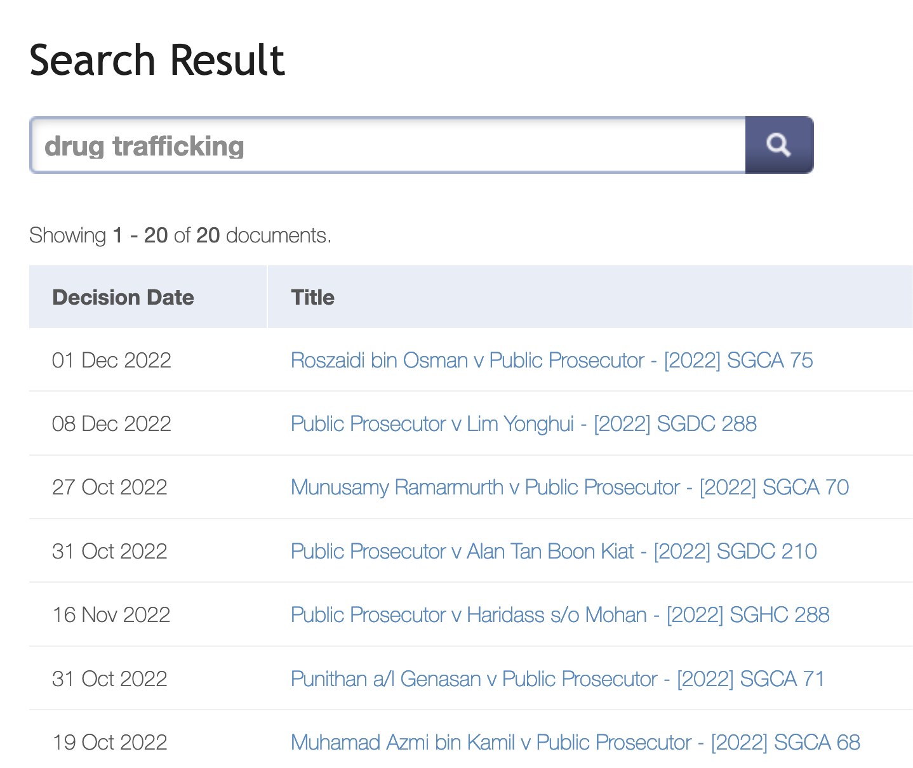
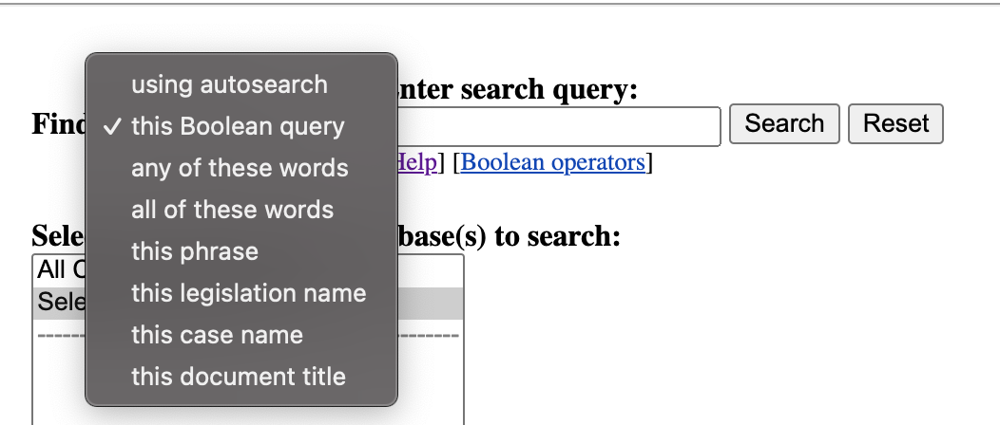
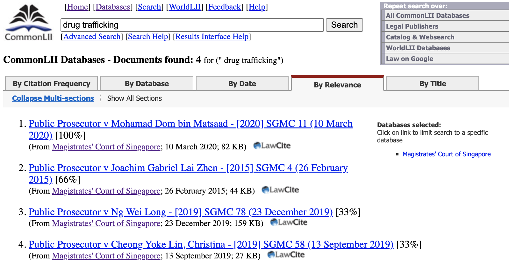
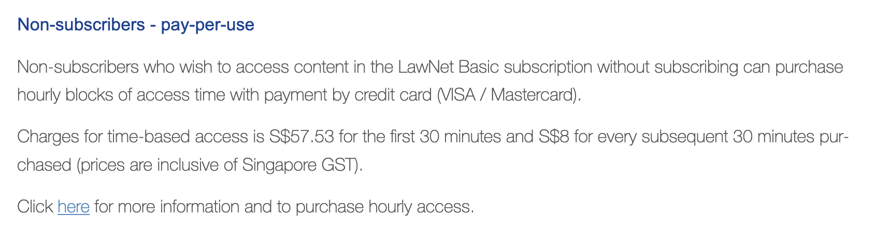
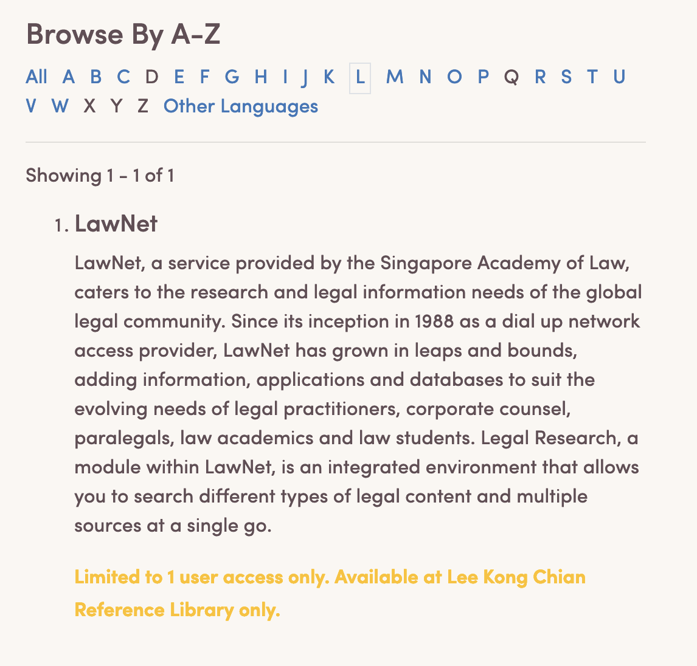

Getting judgments for free in Singapore, or: It shouldn't cost 9 Filet-o-Fish meals to access State Court judgments on LawNet
January 10, 2023, Tuesday
This is an overview of the various free sources of legal judgments in Singapore, and some of the limitations surrounding the status quo of access in Singapore.
My leanings on this matter
I’m highly influenced by the Free Access to Law Movement and think that legal information should be accessible to all. This means that all court judgments and legislation should be free for users to access.
Here, I’m just thinking about access in terms of “Can I search, and find the full text of a judgment?”.
Finding judgments in Singapore
Supreme Court (Court of Appeal + High Court) Judgments
These judgments have the most coverage, and are available through not one, but three sources:
All of the sources cover Supreme Court judgments from 2000 onwards.
State Courts (District Court + Magistrates’ Court)
Update: This section used to be more dismal, but @hueyy has pointed out that CommonLII has Singapore judgments! They’re linked in the section below. Also, CommonLII (along with AustLII, BAILII, HKLII) is a member of the Free Access to Law Movement. Cool :D
This is where the bulk of cases are, but coverage for this from the Singapore Courts/Singapore Academy of Law is worse compared to Supreme Court judgments. On the bright side, there’s CommonLII.
- Lawnet Free Resources - provides judgments released in the past 3 months
- CommonLII’s Singaporean Legal Materials - covers cases from 2006 onwards
- Open Government Products’ OpenDoc opendocsg/opendoc-state-court-judgments
LawNet Free Resources
There is keyword search functionality that returns a list of results, but without excerpts of where the keywords are found: 
CommonLII
Search functionality is more extensive as they support the following options:

Its drawback is the same as LawNet’s free resource page – there are no excerpts of the search results. There are percentage similarity rates on the side (e.g. [100%]), but as a user I don’t know what it really means.
Having an excerpt would help users get an idea of the result’s relevance without having to click and open the judgment.

OGP’s OpenDoc
The OpenDoc team from Open Government Products has a repo with cases from 2019 onwards. However, they’re all in markdown files and the link it used to be hosted at – https://state-court-judgments.opendoc.sg/ – is no longer working.
What’s the use case for organizing judgments by recency?
It’s nice that there’s at least a source for State Court judgments, but I’m not sure of why the resource was designed in this way to limit users to the past 3 months of judgments.
My assumption is that people such as litigants-in-person tend to look for cases based on subject matter such as the area of law, specific fact patterns, statutory provisions etc. If this is true, then their ability to find the information they’re looking for is stunted by the fact that they are only able to search for cases whose judgments have been reported within the past 3 months at the time of querying.
Alternatives to search for State Court cases are not great either: Paying for Lawnet, NLB eResources
Paying for Lawnet
Half an hour of Lawnet under the pay-per-use scheme = 9 Filet-o-Fish meals.I use a Filet-o-Fish meal as my proxy for meals in general. The McDonalds app tells me that it’ll cost $6.20. Pay-per-use is SGD57.53 for the first 30 minutes and SGD8 for every subsequent half an hour.

I’m using the pay-per-use rate as it’s the cheapest. Otherwise, the standard monthly subscription is SGD206.92 (~33 FoF meals).
This honestly doesn’t sound great. Free and open access to law matters because litigants-in-person are already at a disadvantage if their counterparty has counsel – we don’t need to exacerbate this inequality by making them worse-off in terms of access to legal information too. Even out of the litigant-in-person paradigm, I think judgments should be open for public viewing and study as courts are institutions financed by taxpayer money anyway.
NLB eResources
NLB eResources gave me some false hope as their eResources are generally great – getting Udemy courses for free through nlbsg.udemy.com and having access to JSTOR is fantastic. However, eResource access to Lawnet is another thing altogether.
After logging in with myLibrary ID, navigating to eResources and finding “Lawnet”, I realised that Lawnet can only be accessed at the Lee Kong Chian Reference Library. As NLB points out, it’s “limited to 1 user access only”.
Also what is that colour contrast with yellow-on-cream 😭
This involves quite a few steps:
- Making myLibrary ID
- Logging in with myLibrary account
- Going to eResources and finding “Lawnet”
- Realising that there is no online access from my computer, and that I have to go down in person.
- Finding library opening times
- Finding a day and time to go down to the library
- Finally accessing LawNet (and also praying there isn’t already another user there)
This access is “free” in the sense that I don’t have to pay for it, but comes with a lot of other costs. I had to go through steps (1)-(4) only to find out that there’s actually no online access via NLB eResources.
Free access should also entail removing non-price barriers to access as much as possible. Sometimes, it looks like removing image captchasPost written by the creator of IndianKanoon, which is a legal search engine that provides free search and access to Indian court judgments. See also W3C’s comments on inaccessibility of CAPTCHA because it can exclude people with visual impairments or struggle with using technology. Sometimes, it looks like not making people physically travel down to access a resource where only one person can access it at a time.
Conclusions?
Idk, it’d be nice to make LawNet available on a freemium model where basic search functions are free. IndianKanoon does that. The fancier research management stuff + precedent access can be left to law firms to pay for. Or the Courts could even just provide access (with no search functionality) to judgments in machine-readable format so that devs can build tools for it.
As of 3 Jan 2023, SAL has reorganised its digital services under a new subsidiary called LawNet Technology Services. Looking forward to see what they do.
Until then, I guess…just use CommonLII. And tell your friends about it! I had no clue until huey told me.